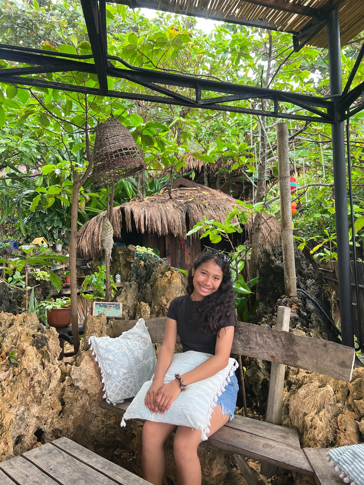

Information Technology · Student
Hello, I'm Stephanie Fate R. Amar
I'm an Information Technology student building practical skills in web development, programming, and digital solutions through coursework and projects.

Information Technology · StudentCurious by nature. Practical by design.
01 / Profile
Learning by doing.
My interests center on understanding how technology works and how it can solve everyday problems. I’m developing my foundations through coursework, practice, and small web projects.
02 / Portfolio
Take a closer look.
Browse my learning areas, project work, education, and ways to connect with me.